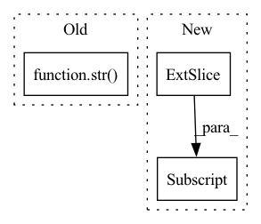

Pattern ID :4742
Before Change
f"Caught exception when running inference from block {block_idx} "
f"(retry in {delay:.0f} sec): {repr(e)}"
)
traceback_level = logging.DEBUG if str( e) else logging.WARNING
logger.log(traceback_level, "See detailed traceback below:", exc_info=True)
time.sleep(delay)
After Change
time.sleep(delay)
self._position += n_input_tokens
inputs = inputs[:, -n_input_tokens:]
outputs = inputs.to(device=inputs_device, dtype=inputs_dtype)
return outputs
def close(self, *exc_details):In pattern: SUPERPATTERN
Frequency: 4
Non-data size: 3
Instances Fragment ID: 16799777
Project Name: bigscience-workshop/distributed-bloom
Commit Name: f56edaa13f0aa009990207efb331a5d74200bfcb
Time: 2022-12-03
Author: borzunov.alexander@gmail.com
File Name: src/petals/client/inference_session.py
M Class Name: InferenceSession
N Class Name: InferenceSession
M Method Name: step(3)
N Method Name: step(3)
M Parent Class:
N Parent Class:
M File Name: src/petals/client/inference_session.py
N File Name: src/petals/client/inference_session.py
M Start Line: 310
M End Line: 311
N Start Line: 223
N End Line: 314
Before Change
0,
self.max_channels,
self.max_frames,
"step_" + str( step) + "_prediction_" + filename,
)
After Change
POSITIVE CLICKS
show_pos_clicks = input_tensor[1:-1, ...] [None]
if isinstance(show_pos_clicks, torch.Tensor):
show_pos_clicks = show_pos_clicks.detach().cpu().numpy()
// Adding all labels in a single channel tensor Fragment ID: 16799779
Project Name: project-monai/monailabel
Commit Name: 9435ee18c820a89c6b46599a35599d703bc17214
Time: 2021-10-25
Author: diazandr3s@gmail.com
File Name: monailabel/deepedit/handlers.py
M Class Name: TensorBoardImageHandler
N Class Name: TensorBoardImageHandler
M Method Name: __call__(2)
N Method Name: __call__(2)
M Parent Class:
N Parent Class:
M File Name: monailabel/deepedit/handlers.py
N File Name: monailabel/deepedit/handlers.py
M Start Line: 124
M End Line: 244
N Start Line: 148
N End Line: 249
Before Change
test_file_name = self.test_list[j]
frame = test_file_name.split("/")[-1][:-4]
proj_path = join(cfg.dataset_path, test_scan_name, "proj")
proj_file = join(proj_path, str( frame) + "_proj.pkl")
if isfile(proj_file):
with open(proj_file, "rb") as f:
proj_inds = pickle.load(f)After Change
proj_inds = inputs["data"].reproj_inds[0]
// proj_inds = inputs.proj_inds
probs = results[proj_inds, :]
// probs = results[j][proj_inds, :]
pred = np.argmax(probs, 1)
Fragment ID: 16799780
Project Name: isl-org/open3d-ml
Commit Name: 1ada80a42a187a3eefcb45d2f70078570d50872d
Time: 2020-08-22
Author: yilingq@umd.edu
File Name: ml3d/datasets/semantickitti.py
M Class Name: SemanticKITTI
N Class Name: SemanticKITTI
M Method Name: save_test_result(3)
N Method Name: save_test_result(3)
M Parent Class:
N Parent Class:
M File Name: ml3d/datasets/semantickitti.py
N File Name: ml3d/datasets/semantickitti.py
M Start Line: 107
M End Line: 126
N Start Line: 108
N End Line: 129